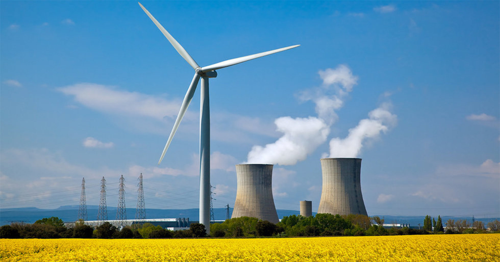

What do we actually do?
Susnium™ designs, builds, and operates clean energy infrastructure around the world. Our projects range from rooftop solar for homes and businesses to utility-scale wind, hydro, and nuclear power plants. We stay with each project after it is built, using monitoring technology and a dedicated maintenance team to keep it running reliably. We also build the public websites and dashboards that let communities see how their local project is performing.
